Exploring Magnetotail Structure and Dynamics
with Magnetohydrodynamic Simulations
John Haiducek
Exploring Magnetotail Structure and Dynamics
with Magnetohydrodynamic Simulations
John Haiducek
Sep 6, 2018
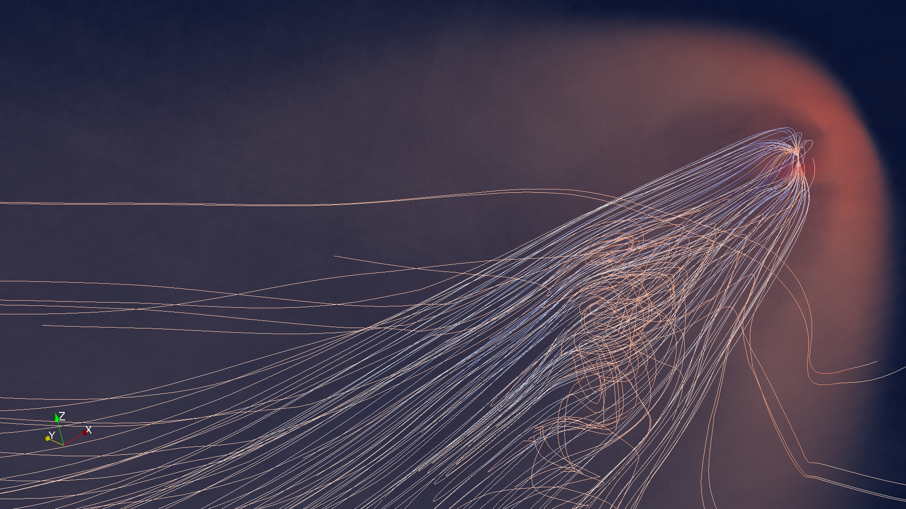
Output from a magnetohydrodynamic (MHD) model
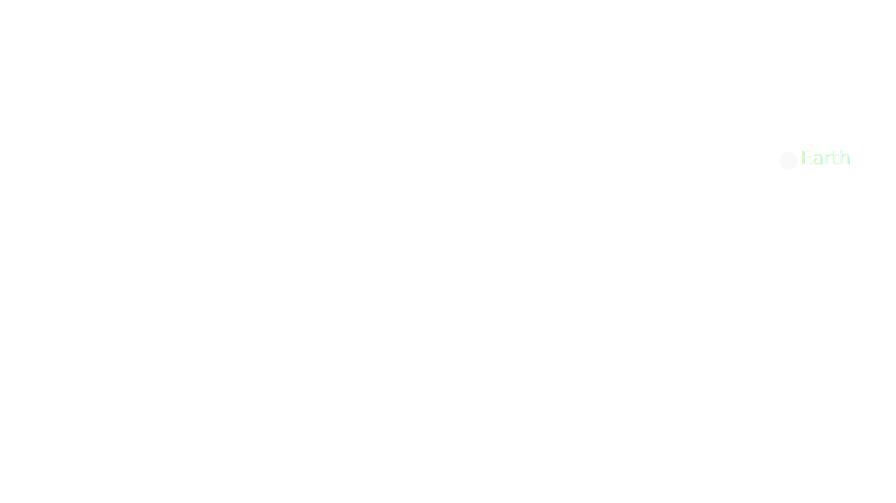
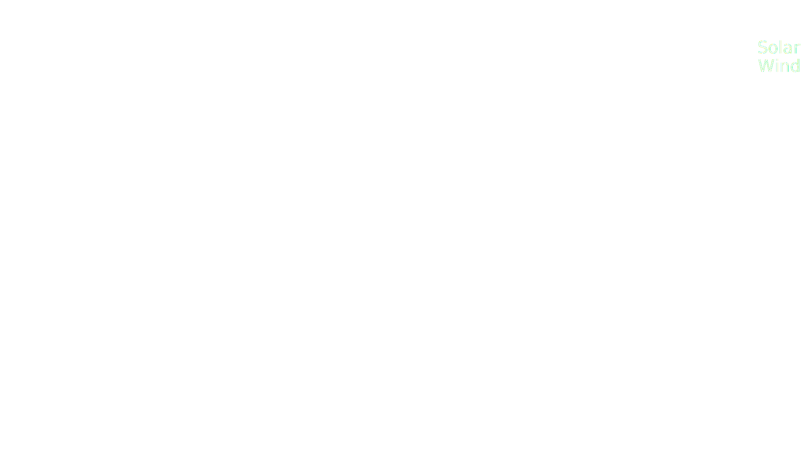
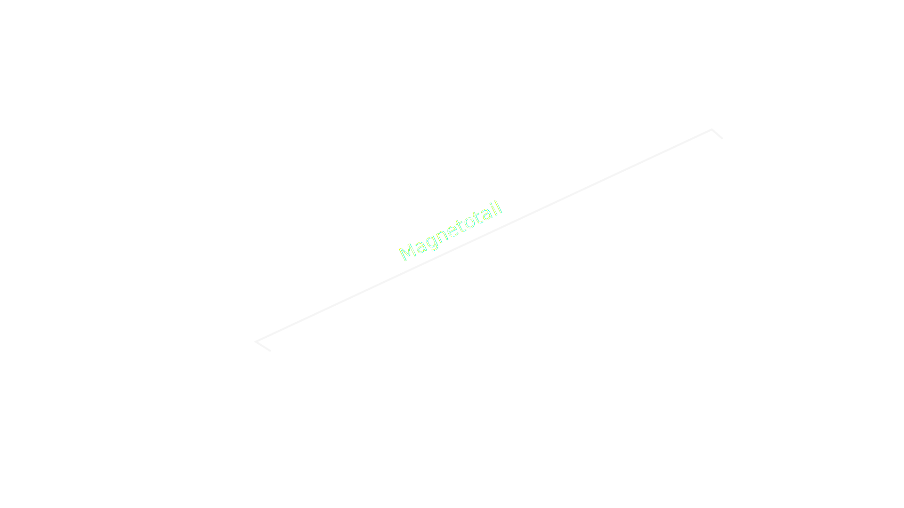
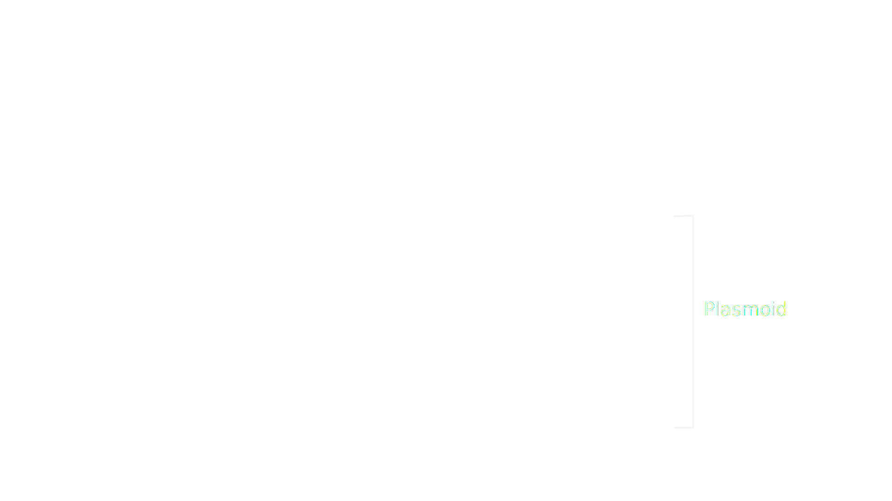
Summary
Solar wind provides energy to the magnetosphere
Walt Feimer, NASA SVS, 2010
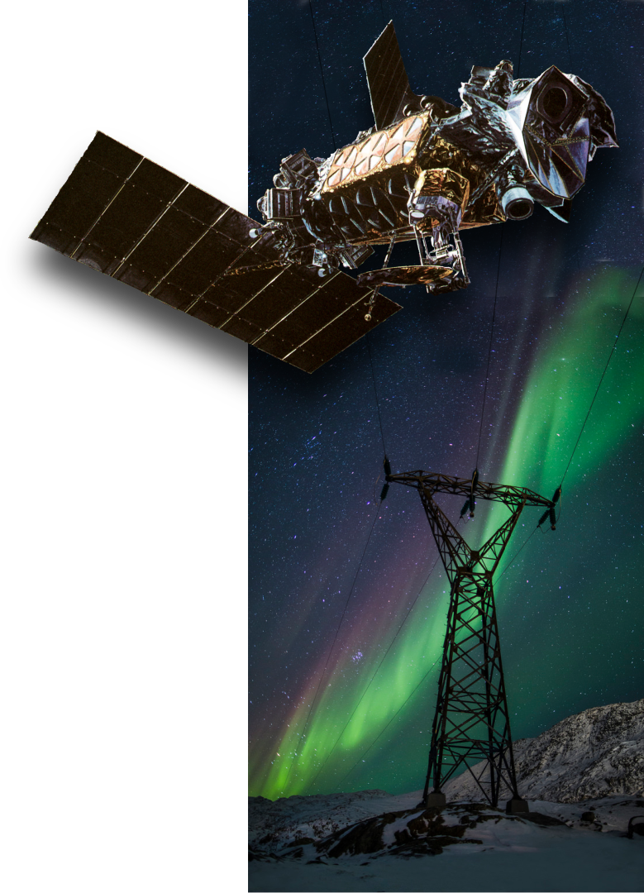
Motivation
Magnetotail is a very dynamic region which is poorly covered by observational data
Magnetotail dynamics contribute to space weather hazards
Geomagnetically induced currents
Spacecraft charging
Spacecraft anomalies
Communication outages
Magnetotail is not always considered in forecasting of space weather
Motivation
MHD captures global dynamics, including connections between different regions and spatial scales
MHD models have been used to study the magnetosphere for many years
Few MHD validation efforts have focused on the magnetotail
Objectives
Extend the validation of MHD into the magnetotail region
Explore the connections between the magnetosphere and ionosphere
Test whether MHD can consistently reproduce observed substorms
Summary
Space Weather Modeling Framework
Solar wind inputs
Geomagnetic indices estimate magnetospheric current systems
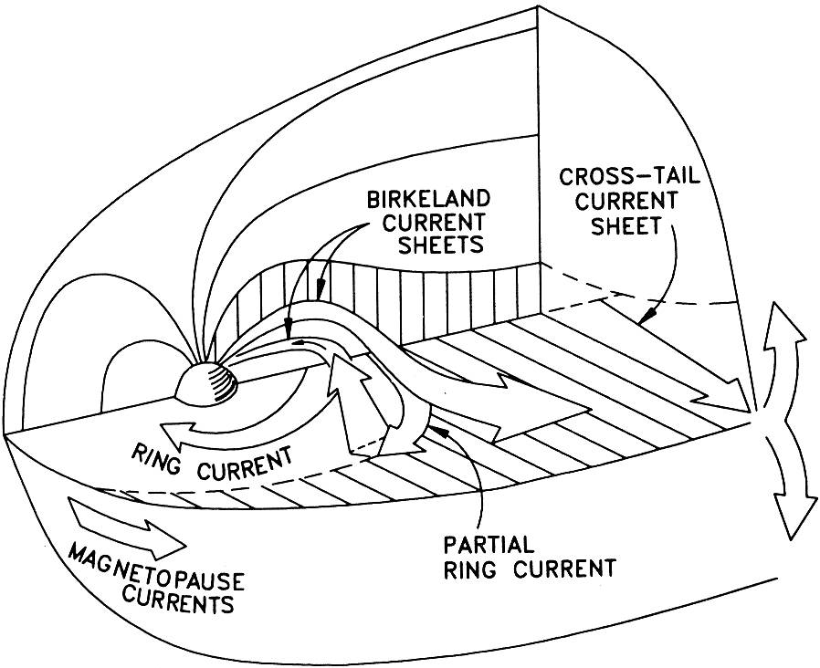
From Stern (1994)
Currents are constantly changing
Currents produce a magnetic field that can be observed from the ground
Geomagnetic indices are computed from ground-based magnetic field measurements
Sym-H index estimates azimuthal current strength
From Stern (1994)
Sym-H
Computed from low-latitude magnetometers
Sensitive to azimuthal currents (ring current, partial ring current, cross-tail current, magnetopause current)
Model does well at predicting Sym-H
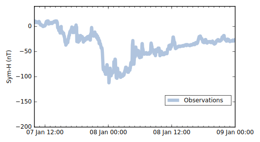
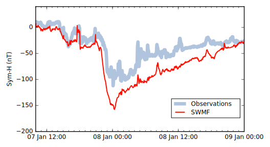
Storm-time behavior
Ring current strengthens
Sym-H turns negative
Good Sym-H predictions
Indicate model has realistic ring currents
Important for storm-time accuracy
Model does well at predicting Sym-H
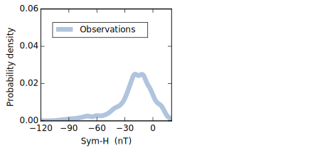
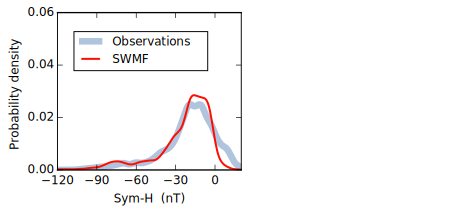
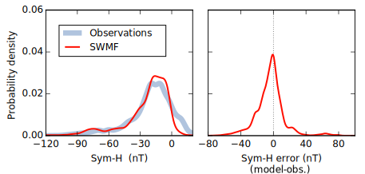
AL index responds to substorm electrojet current
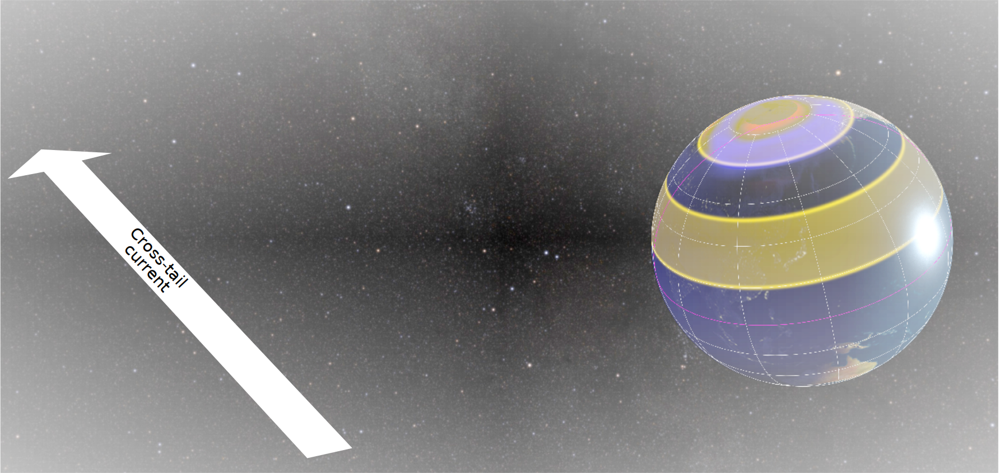
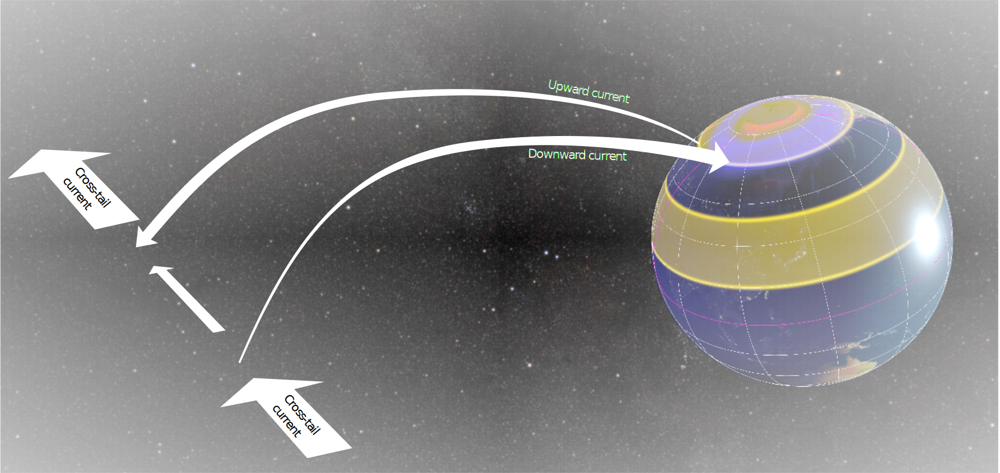
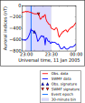
Strongly negative AL is missed
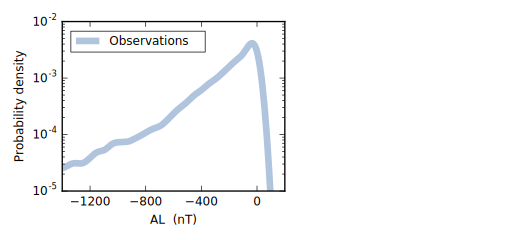
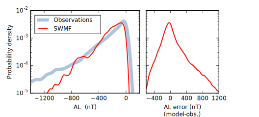
Summary
Isotropic boundary consists of a sharp change in particle precipitation
Scattering mechanisms
Current sheet scattering (CSS)
Explains presence of IB at all times and MLTs
Occurs when field line curvature \(r_c\) is small and gyroradius \(r_g\) is large
Controlled by \(K=\frac{r_c}{r_g}\)
EMIC wave scattering
Requires presence of EMIC waves
Wave frequency must be near ion gyrofrequency
EMIC waves are more common during active times
Objectives
Constrain the range of \(K\) associated with CSS
Assess the relative importance of CSS during storms
Field lines traced to determine origin of IB particles
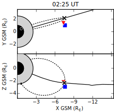
Trace starts at IB observation
\(K\) estimated where field line crosses current sheet
THEMIS satellites provide magnetic field observations in the vicinity
\(K\) correlates with \(\Delta B_z\)
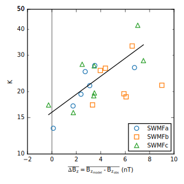
Model error in \(B_z\) obtained using THEMIS observations
Correlation between \(K\) and \(\Delta B_z\) allows part of the error in \(K\) to be removed
Corrected \(K\)'s fall in a fairly narrow range
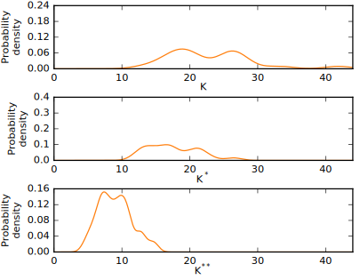
IB properties vary significantly during storms
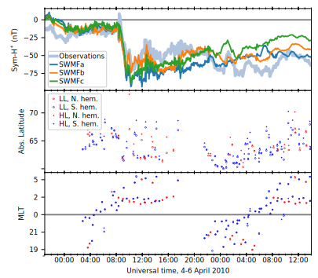
Sym-H and MLT correlate with IB latitude but not \(K^*\)
Indicates that CSS process is active for a significant portion of IB observations
Storm-time \(K\) is often within the range for CSS
Between 21% to 69% of \(K^*\) values are in range for CSS, depending on threshold and latitude set used
Indicates that CSS is not the sole mechanism
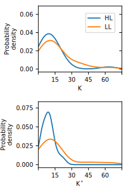
Summary
Substorm validation effort
Can SWMF predict substorms?
Use a “vanilla” SWMF global magnetosphere set-up
Feed a month (January, 2005) of observed solar wind data into it
Look for substorms...
...this last step is complicated by the lack of an agreed-upon method for identifying substorms
Substorm identification
Substorms can be identified in many ways
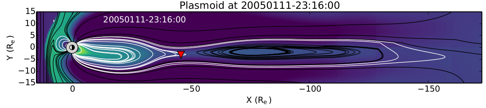Plasmoid releases (model)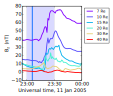Satellite fields (model+obs.)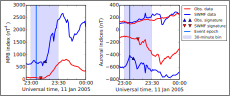Ground-based fields (model+obs.)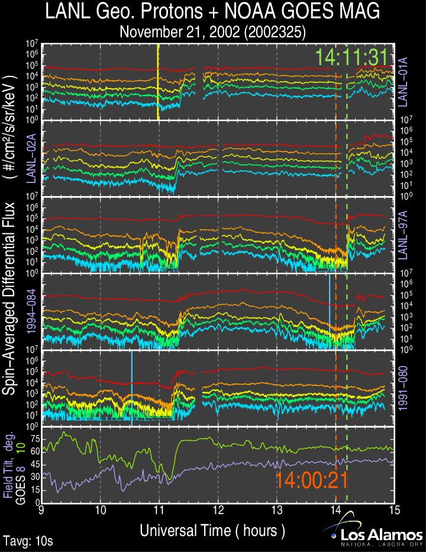Energetic particles (obs.)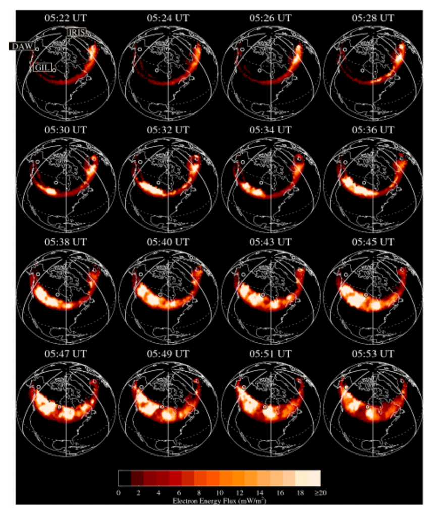Auroral brightening (obs.)
Each method produces false positives and misses
Using all datasets together could improve accuracy
Combining signatures
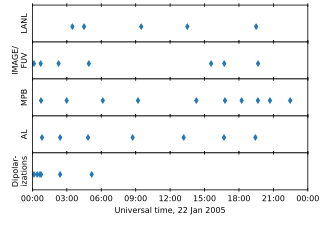
Convolve each onset list with a Gaussian kernel
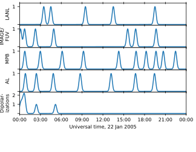
Add convolved scores together
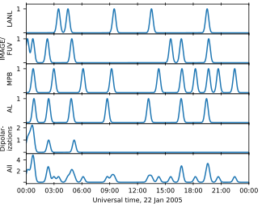
Identify local maxima that exceed a threshold
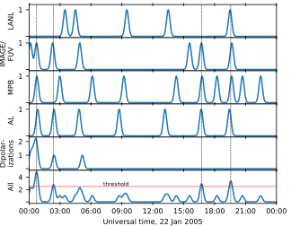
Tuning parameters:
Kernel width = 10 min
Threshold = 2.5
Could be different for model and observations
Combining signatures reduces false positives and data gaps
SWMF events
Obs. events
AL
100
156
MPB
192
167
Dipolarizations
145
77
IMAGE/FUV
-
97
LANL EP data
-
109
Plasmoids
397
-
All
97
102
SWMF events
Obs. events
AL
100
156
MPB
192
167
Dipolarizations
145
77
IMAGE/FUV
-
97
LANL EP data
-
109
Plasmoids
397
-
All
97
102
Skill score measure the model's accuracy
Heidke skill score (HSS)
0=random chance (no skill)
1=perfect forecast
My HSS: 0.11
Observations
Y
N
Model
Y
17
80
N
85
1,306
HSS > 0 (good)...but is it significantly greater than zero?
Also, this was obtained using a particular threshold (2.5) for identifying a substorm in both the model and the observations...do we get positive skill scores for other thresholds?
Model has significant predictive skill
95% confidence interval shows skill is significant
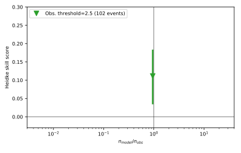
Significance persists when thresholds are varied
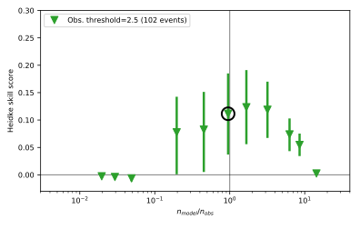
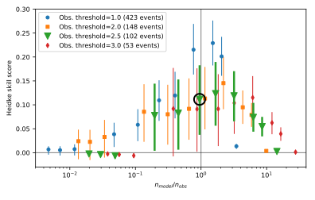
Conclusions
SWMF does well in predicting geomagnetic indices
CSS plays dominant role for IB formation during quiet conditions and a significant role during storm conditions
Substorm identification procedure fulfills a community need to move toward multiple-signature identification
False identifications are rejected
Data gaps are filled
Substorm prediction with MHD is possible
What's next: Isotropic boundaries
Study additional time periods for better statistics
Compare with EMIC wave observations
Test day-side IB observations
What's next: Identification procedure
More tests of identification procedure
Randomized data
Additional signatures and time periods
Improvements to identification procedure
Asymmetric kernels to account for time offsets
Non-uniform weights
Variable threshold
What's next: SWMF magnetosphere modeling
Test methods of improving field line stretching
Better physics in reconnection region
Uncertainty quantification
Data assimilation
Events have characteristic substorm response
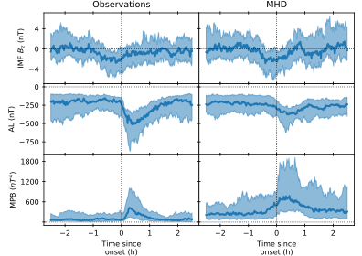
Lines show median of onsets
Shading shows interquartile range
Model under-predicts AL strength, over-predicts MPB strength
Model produces realistic waiting times
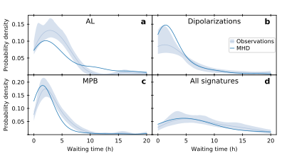
POD exceeds POFD
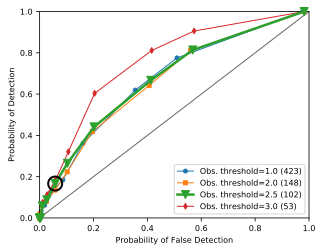
Events have characteristic substorm response
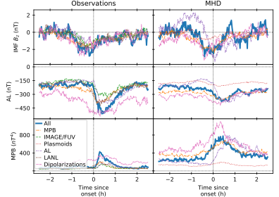
Lines show median of onsets
Shading shows interquartile range
Model under-predicts AL strength, over-predicts MPB strength
Reconnection drives plasma flow
Plasmoids move tailward
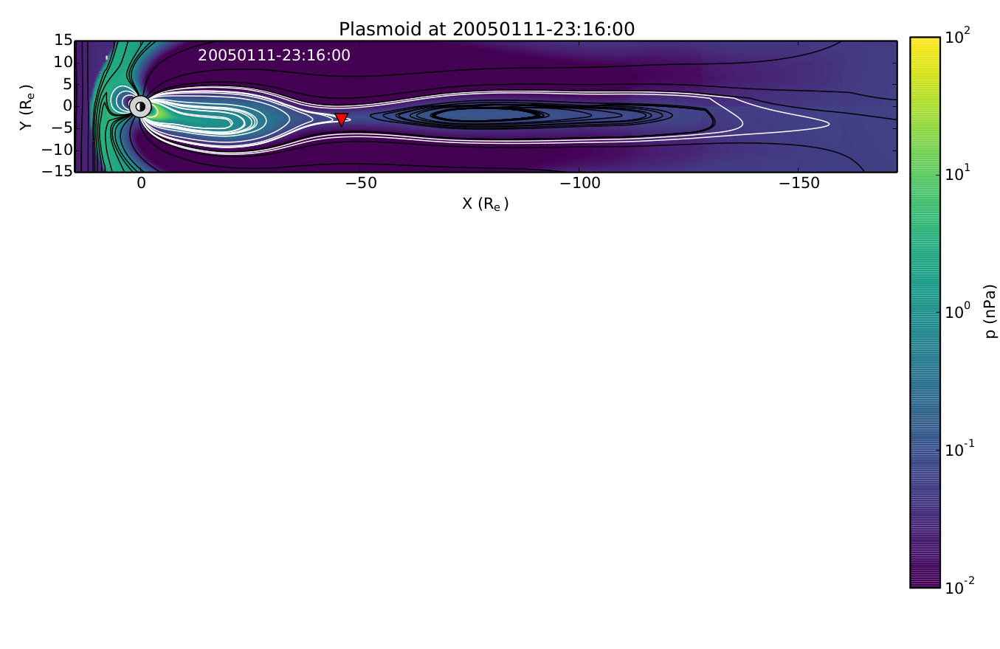
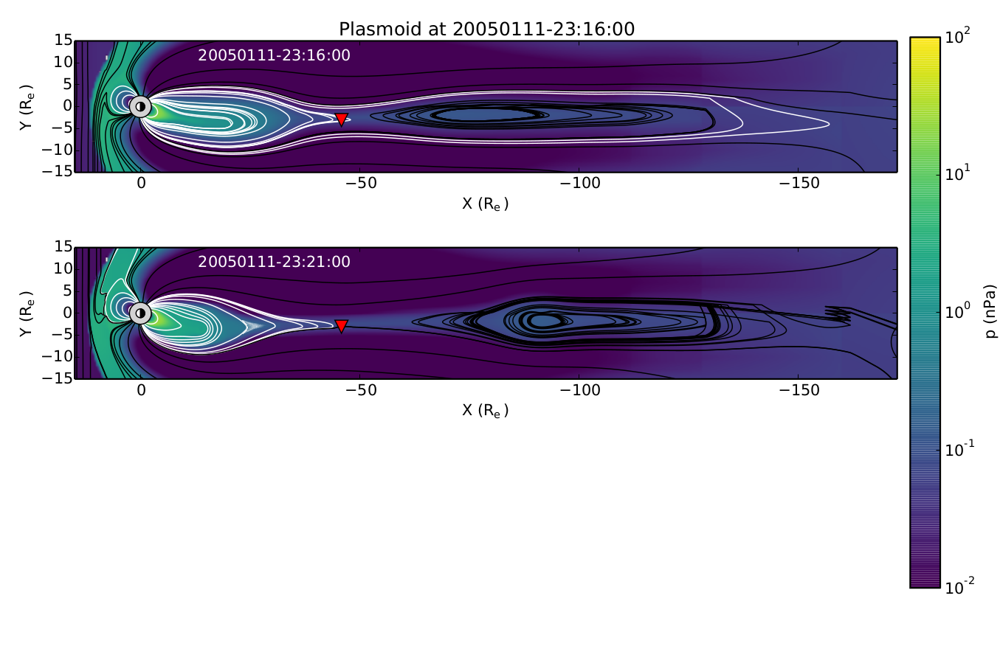
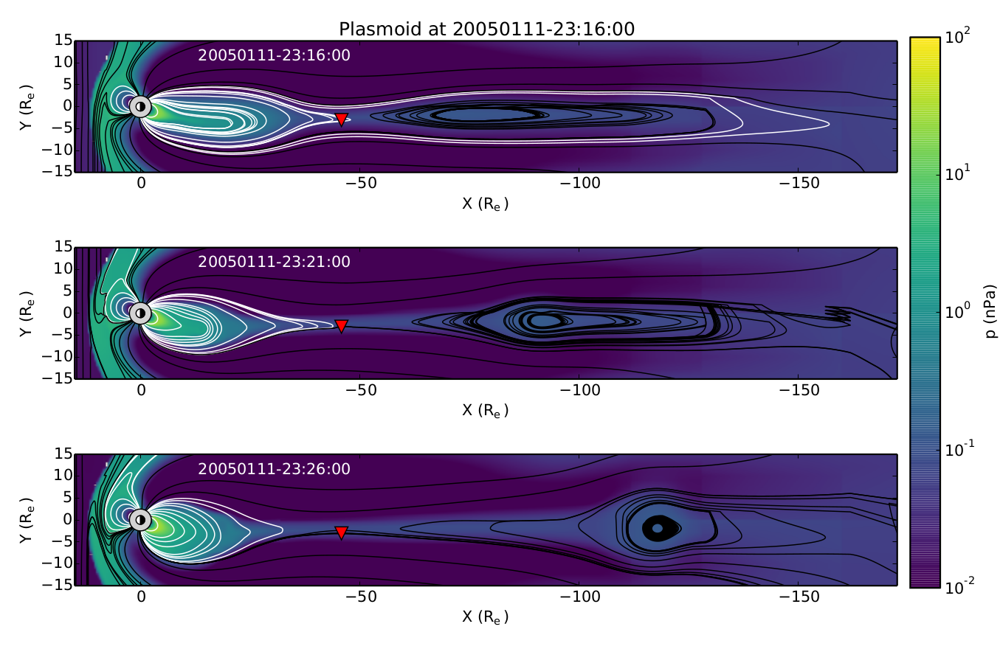
Substorm currents affect magnetic fields
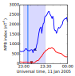
Energetic particles detected by spacecraft
Henderson, 2009
LANL SOPA instrument detects particle fluxes in geosynchronous orbit
Use list from Borovsky (2017)
Auroral brightening
Kavanagh et al., 2007
Substorm onsets observed WIC camera on the IMAGE spacecraft
Use list from Frey et al., 2004 (since updated to include 2005)